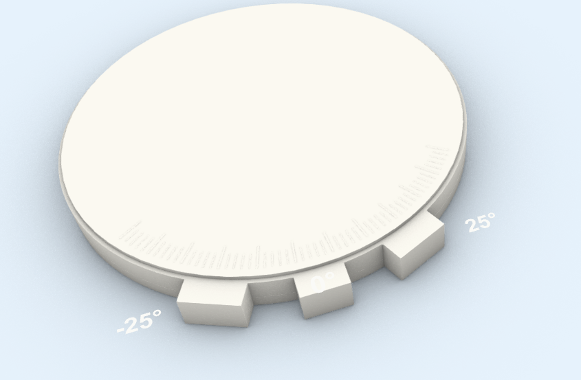
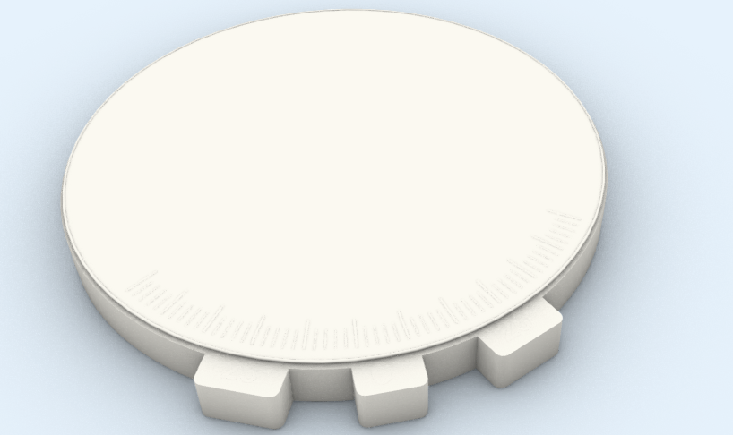

目标只有一句话
我想得到“正确展开 UV 后的模型”，但并不知道正确结果应该是什么样。
02 / 从粗模到最终效果



04 / 成功案例结论
Codex 能快速生成、修改和排查脚本，但“结构是否合理”“形态是否接近参考”“哪些细节值得保留”，仍然来自人的经验和判断。
AI 负责铺开可能性，人负责让结果收敛。
05 / 核心案例 · Rhino 建模

我只要求外观一样，用于渲染。你给我建模，然后给我 3DM 文件，可以先出个简易的。
06 / 演变时间线
08 / 一个没有成功的案例 · UV 展开

没有判断标准的生成，只会产生越来越像答案的东西。
09 / 场景一致性 · RAV4 内饰
车载 AI 场景常常像不同车型东拼西凑。解决方法不是继续说“更真实”，而是指定准确车型、提供真实全景参考，并逐步修正产品与环境的接触关系。


参考资料不是让 AI 照抄，而是让它不再胡乱拼接。